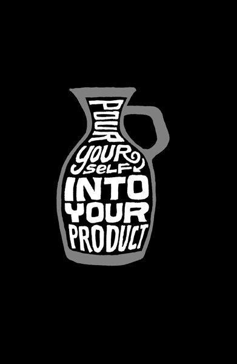

{% include JB/setup %}
{% raw %}
<div>

<h2 id="filepos143133" class="calibre19"><span class="calibre2"><a class="calibre13"></a><strong class="calibre14">Don't copy</strong></span></h2><div class="calibre4"></div>
<p class="calibre7">Sometimes copying can be part of the learning process, like when you see an art student replicating a painting in a museum or a drummer playing along to John Bonham's solo on Led Zeppelin's "Moby Dick." When you're a student, this sort of imitation can be a helpful tool on the path to discovering your own voice.</p>
<p class="calibre17">Unfortunately, copying in the business arena is usually more nefarious. Maybe it's because of the copy-and-paste world we live in these days. You can steal someone's words, images, or code instantly. And that means it's tempting to try to build a business by being a copycat.</p>
<p class="calibre17">That's a formula for failure, though. The problem with this sort of copying is it skips understanding--and understanding is how you grow. You have to understand why something works or why something is the way it is. When you just copy and paste, you miss that. You just repurpose the last layer instead of understanding all the layers underneath.</p>
<p class="calibre17">So much of the work an original creator puts into something is invisible. It's buried beneath the surface. The copycat doesn't really know why something looks the way it looks or feels the way it feels or reads the way it reads. The copy is a faux finish. It delivers no <a class="calibre16"></a>substance, no understanding, and nothing to base future decisions on.</p>
<p class="calibre17">Plus, if you're a copycat, you can never keep up. You're always in a passive position. You never lead; you always follow. You give birth to something that's already behind the times--just a knockoff, an inferior version of the original. That's no way to live.</p>
<p class="calibre17">How do you know if you're copying someone? If someone else is doing the bulk of the work, you're copying. Be influenced, but don't steal.</p>
<p class="calibre3"><a class="calibre16"></a></p><div class="calibre4"></div>
</div>

{% endraw %}

